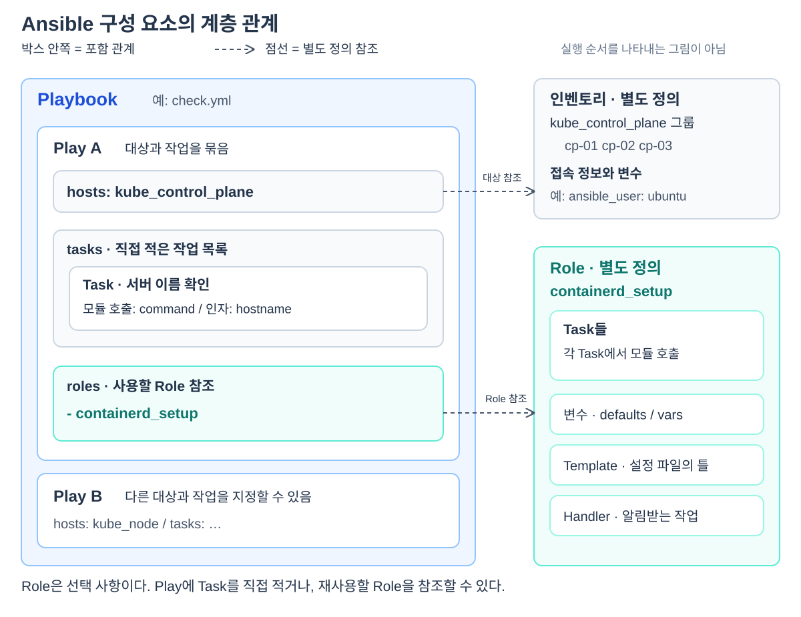

서버 한 대의 이름을 확인하려면 SSH로 접속해 hostname을 실행하면 된다. 서버가 여러 대라면 같은 일을 반복해야 한다. Ansible은 어느 서버에서 어떤 작업을 할지 파일로 적고, 그 내용을 여러 서버에 실행하는 도구다. 보통 실행 컴퓨터에서 SSH로 대상 Linux 서버에 접속한다.
처음부터 큰 디렉터리 구조를 외울 필요는 없다. 작업 하나를 적는 방법부터 시작해, 대상을 붙이고, 파일로 저장하고, 커진 작업을 분리하는 순서로 보면 각 요소가 왜 필요한지 드러난다. 이 글에서는 “서버 이름 확인”이라는 작은 예시를 확장한다. 예시는 개념 설명용이며, 파일을 저장하는 것만으로 서버에서 실행되지는 않는다.
1. Module: 실제로 일을 수행하는 기능
Ansible에는 명령 실행, 패키지 설치, 파일 복사 등 목적별 기능이 준비돼 있다. 이런 기능을 Module(모듈)이라고 한다.
서버에서 hostname을 실행하고 싶다면 ansible.builtin.command라는 모듈을 사용한다. 이 이름 전체가 “Ansible에 기본 포함된 command 모듈”을 가리킨다. hostname은 그 모듈에 전달할 명령이다.
| 하고 싶은 일 | 사용하는 모듈 예 |
|---|---|
| 서버에서 명령 실행 | ansible.builtin.command |
| Ubuntu 패키지 설치 | ansible.builtin.apt |
| 파일 복사 | ansible.builtin.copy |
모듈은 사용할 수 있는 기능이다. 실제로 어떤 명령을 실행할지, 어떤 패키지를 설치할지는 따로 지정해야 한다.
2. Task: 모듈과 입력값을 지정한 작업 하나
“command 모듈로 hostname을 실행해라”라는 요청을 적으면 Task(태스크)가 된다.
- name: 서버 이름 확인
ansible.builtin.command:
cmd: hostname
이 코드는 작업 하나를 나타내는 조각이다. 각 줄은 다음 뜻이다.
name: 실행 로그에서 알아볼 작업의 설명이다. 실제 명령을 결정하지는 않는다.ansible.builtin.command: 이 작업에 사용할 모듈이다.cmd: hostname: 모듈에 전달할 입력이다. 여기서는 실행할 명령을 뜻한다.
YAML에서 키: 값은 설정 항목을 적는 방식이고, 들여쓰기는 안쪽에 속하는 내용을 나타낸다. 앞의 -는 목록의 항목 하나라는 뜻이다. Task 여러 개를 적을 때 이 항목을 나란히 추가한다.
Task는 작업 요청이고, Module은 그 요청에 사용하는 기능이다. 모듈의 구현 코드를 Task 안에 작성하는 것은 아니다. 위 조각에는 아직 어느 서버에서 실행할지가 없다.
3. Play: 작업 목록에 실행 대상을 붙이기
서버 이름 확인 작업을 CP 서버들에서 실행하려면, 대상과 Task 목록을 함께 적는다. 이 묶음이 Play(플레이)다.
- name: CP 서버 점검
hosts: kube_control_plane
tasks:
- name: 서버 이름 확인
ansible.builtin.command:
cmd: hostname
hosts는 대상 서버 또는 그룹을 선택하고, tasks는 그 대상에서 수행할 Task 목록이다. 여기서는 kube_control_plane이라는 서버 그룹을 선택한다. 그 그룹의 실제 서버와 주소는 별도 서버 목록인 Inventory(인벤토리)에 적는다.
바깥 name: CP 서버 점검은 Play의 이름이고, 안쪽 name: 서버 이름 확인은 Task의 이름이다. 들여쓰기를 보면 Play 안에 Task가 들어 있다는 관계를 읽을 수 있다.
하나의 Play에 Task를 여러 개 넣을 수도 있다. 예를 들어 서버 이름 확인 뒤에 실행 계정 확인 작업을 추가하면 같은 대상에서 두 작업을 수행한다.
4. Playbook: Play를 담아 저장한 YAML 파일
위 Play를 check.yml이라는 파일에 저장하면, 그 파일이 Playbook(플레이북)이다. Playbook에 Play 하나만 있어도 된다.
CP 서버에는 서버 이름 확인 작업을 하고, Worker 서버에는 다른 작업을 하고 싶다면 같은 파일에 Play를 하나 더 적을 수 있다. 대상과 작업 묶음이 Play이고, 그런 Play들을 담는 파일이 Playbook이다. 큰 프로젝트에서는 다른 Playbook 파일을 불러오기도 한다.
현재 예시의 포함 관계는 Playbook → Play → Task다. Task가 실제 기능을 사용하려고 Module을 호출한다. 이 단계에서는 Role이 없어도 작업을 구성할 수 있다.
5. Inventory와 Group: 대상 이름을 실제 서버에 연결하기
Play의 hosts: kube_control_plane만으로는 서버 주소를 알 수 없다. 인벤토리가 그 이름에 속한 서버와 접속 정보를 알려준다. 다음 내용을 hosts.yaml에 저장했다고 가정한다.
all:
children:
kube_control_plane:
hosts:
cp-01:
ansible_host: 10.0.0.11
cp-02:
ansible_host: 10.0.0.12
vars:
ansible_user: ubuntu
all은 전체 서버를 포함하는 기본 그룹이다. 그 아래 children에는 하위 그룹을 적는다. kube_control_plane 그룹의 hosts 안에 두 서버가 있고, ansible_host가 각 서버의 실제 접속 주소다. vars 안의 ansible_user: ubuntu는 이 그룹의 서버에 SSH로 접속할 때 사용할 계정을 지정한다.
Group(그룹)은 서버들을 함께 선택하기 위한 이름이다. VM이나 네트워크를 새로 만드는 기능은 아니다. 이 예시에서는 이미 존재하는 두 서버를 하나의 대상으로 묶었다.
이제 실행 컴퓨터에서 두 파일을 지정하면 된다. 아래 명령은 SSH 인증과 대상 서버의 Python 실행 환경이 준비돼 있다는 전제다.
ansible-playbook -i hosts.yaml check.yml
-i hosts.yaml은 대상 목록을, check.yml은 작업 절차를 선택한다. Ansible은 Play의 그룹 이름을 인벤토리에서 찾아 두 서버에 접속하고, 각각에서 Task의 hostname 명령을 실행한다. 이 조회에는 root 권한이 필요하지 않다.
서버 하나가 여러 그룹에 속하는 경우, SSH 키 지정, sudo 권한 전환은 Ansible 인벤토리·그룹·변수: 서버와 접속 정보 정의하기에서 자세히 설명한다.
6. Variables: 작업은 유지하고 입력값 바꾸기
서버마다 값이 다르다고 작업 코드를 매번 복사하면 관리하기 어렵다. Variables(변수)는 코드에서 사용할 값을 이름으로 분리한다. 다음은 실행할 명령을 변수로 지정한 Play다.
- name: CP 서버 점검
hosts: kube_control_plane
vars:
check_command: hostname
tasks:
- name: 지정한 점검 명령 실행
ansible.builtin.command:
cmd: "{{ check_command }}"
check_command에 hostname을 넣고, {{ check_command }}로 그 값을 사용한다. vars는 Play에도 둘 수 있고 인벤토리에도 둘 수 있다. 값이 많아지면 group_vars 같은 별도 위치로 분리한다.
ansible_user처럼 Ansible이 용도를 아는 변수도 있고, check_command처럼 작성자가 직접 정한 변수도 있다. 변수를 선언하기만 해서는 아무 작업도 일어나지 않는다. 그 값을 사용하는 코드가 있어야 한다. 변수 위치와 기본값은 인벤토리·변수 상세 문서에서 구분한다.
7. Role: 커진 작업과 관련 파일을 기능별로 묶기
작업이 두세 개라면 Play의 tasks에 직접 적으면 충분하다. 하지만 프로그램 하나를 설치하려면 패키지 설치, 설정 파일 생성, 서비스 시작 등 여러 Task와 관련 파일이 필요해진다. 이것을 Role(롤)이라는 재사용 단위로 분리할 수 있다.
예를 들어 containerd_setup이라는 Role을 작성해 두었다면 Play에서는 다음처럼 참조한다.
- name: 클러스터 노드 준비
hosts: kube_control_plane
roles:
- containerd_setup
이 이름은 설명용이다. 이름만 쓰면 설치 기능이 생기는 것이 아니라, Ansible이 찾을 수 있는 위치에 실제 Role 코드가 있어야 한다. Role 안에는 실행할 Task, 기본 변수, 설정 파일의 틀 등을 함께 둘 수 있다.
Role은 Task보다 큰 묶음이고 Play에서 가져다 사용한다. 따라서 Playbook → Play → Role의 Task로 구성할 수도 있고, Play에 Task를 직접 둘 수도 있다. Role이 반드시 거쳐야 하는 계층은 아니다.

그림은 실행 순서가 아닌 구성 관계를 나타낸다. 중첩 박스는 포함 관계이고 점선은 별도로 정의된 Inventory나 Role을 참조하는 관계다. Task에는 Module을 호출하는 내용이 들어간다.
Role의 내부 구조와 모듈별 동작, 일회성 명령의 차이는 Ansible Playbook·Play·Role·Task·Module: 작업의 구성 이해하기에서 설명한다.
8. Template과 Handler: 설정 파일과 후속 작업 다루기
설치 작업에는 코드뿐 아니라 설정 파일도 필요하다. Template(템플릿)은 실제 값을 채워 넣을 파일의 틀이다. 예를 들어 설정 파일의 서버 주소를 {{ api_address }}로 적어 두고 환경마다 다른 값을 넣을 수 있다. template 모듈을 사용하는 Task가 이를 실제 파일로 만들어 대상 서버에 저장한다.
파일을 바꿨다면 서비스가 새 설정을 읽도록 재시작해야 할 수도 있다. Handler(핸들러)는 이런 변경 알림을 받아 실행하는 Task다. 설정 생성 Task가 변경을 보고하며 알림을 보내면, 연결된 Handler가 정해진 시점에 서비스 재시작 같은 작업을 수행한다.
Template은 파일의 틀이고 Handler는 조건부 후속 작업이다. 둘 다 Playbook보다 위에 있는 계층이 아니다. 실제 파일 예제와 알림 연결은 Ansible 템플릿과 핸들러: 설정 파일 생성과 변경 반영하기에 있다.
9. Kubespray에서는 이 구조를 어떻게 사용하나?
Kubespray는 Kubernetes 설치에 필요한 Playbook, Role, Task와 템플릿 등을 미리 작성해 둔 프로젝트다. Ansible이 실행 도구이고, Kubespray는 그 도구로 실행할 설치·운영 코드다.
사용자는 자신의 서버를 인벤토리에 적고 환경에 맞는 변수를 제공한다. Ansible이 Kubespray Playbook을 읽으면 Play가 서버 그룹과 Role을 선택하고, Role의 Task가 모듈을 사용해 설치를 진행한다. 그중 일부 Task는 kubeadm 명령을 실행해 Kubernetes 초기화나 노드 합류를 수행한다.
파일을 찾을 때도 이 관계를 따라가면 된다. 대상 서버는 인벤토리, 대상별 작업 선택은 Play, 구체적인 설치 동작은 Role의 Task에서 찾는다. 실제 파일 경로는 Kubespray로 보는 Ansible 디렉터리 구조에 정리했다.
실행 결과를 읽을 때의 기준
서버 연결 오류라면 인벤토리의 주소·SSH 인증부터 확인한다. 특정 Task가 실패했다면 그 Task가 사용한 모듈과 입력값, 오류 메시지를 본다. 파일이 만들어졌는데 서비스가 동작하지 않으면 설정 내용과 서비스 로그를 확인한다.
ansible.builtin.ping 성공은 원격 모듈 실행이 가능하다는 뜻이며 Kubernetes 설치 완료를 뜻하지 않는다. command 모듈의 CHANGED도 조회 명령을 실행한 결과일 수 있으므로, 항상 실제 작업 내용과 함께 읽어야 한다. 이 글의 예시는 설명용이며 여기서 서버에 새 작업을 실행한 것은 아니다.